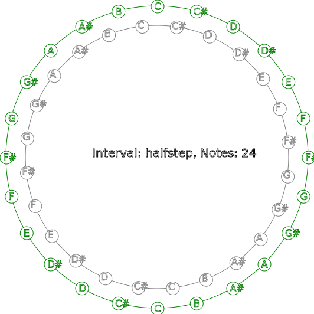
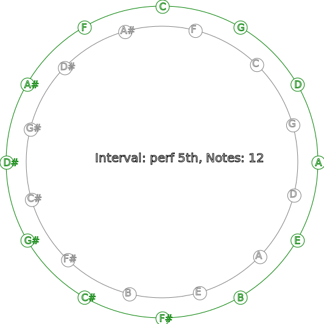
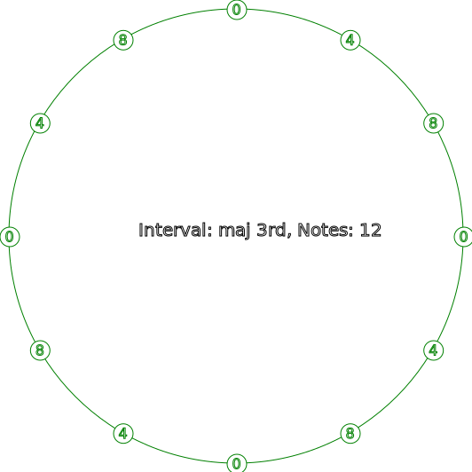
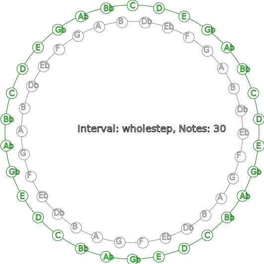

Circular Music Interval Diagram
After studying John Coltrane's wholetone/chromatic circular diagram, I was determined to make a program to show musical intervals around a circle. And if I could, to make a concentric "inner" ring with note offsets, like Coltrane did. So the weekend arrived and I got busy...
tl;dr: circle-intervals ~ Images at the bottom
Let's dive in!
First up is the standard perl preamble:
#!/usr/bin/env perl
use strict;
use warnings;
Next is importing the functionality we will use from a couple other modules:
use List::SomeUtils qw(first_index);
use Math::Trig ();
use Music::Scales qw(get_scale_notes);
use SVG qw(title);
We will use a few trig constants and the main scale name:
use constant PI => 2 * atan2(1,0);
use constant HALF => PI / 2;
use constant DOUBLE => 2 * PI;
use constant SCALE => 'chromatic';
Here we grab any command-line user arguments and fall back to a default for each:
my $interval = shift || 1; # interval to calculate: default chromatic 1-11
my $show_marks = shift || 12; # how many circular note marks to display 2-60
my $show_inner = shift // 0; # show the inner ring?
my $flat = shift // 0; # show note names with flats: default sharps
my $numeric = shift // 0; # display notes as pitch numbers
my $outer_note = shift || 'C'; # starting outer ring note
my $inner_note = shift || 'C#'; # starting inner ring note
my $diameter = shift || 512; # the diameter of the circle
my $fill = shift || 'white';
my $outer_line = shift || 'green';
my $inner_line = shift || 'gray';
my $text_line = shift || 'black';
We set a number of parameters that define the behavior of the program:
my $total_marks = 60; # maximum number of interval markers 2-60
my $font_size = 20; # size of the caption font
my $border_size = 10; # chart margin
my $sub_radius = 11; # radius for sub-circle markings
my $radius = $diameter / 2;
my $frame_size = $diameter + 2 * $border_size;
my %named = (
1 => 'halfstep',
2 => 'wholestep',
3 => 'min 3rd',
4 => 'maj 3rd',
5 => 'perf 4th',
6 => 'tritone',
7 => 'perf 5th',
8 => 'sharp 5',
9 => 'sixth',
10 => 'flat 7',
11 => 'seventh',
);
my $caption = "Interval: $named{$interval}, Notes: $show_marks";
my $title = 'Circular Music Intervals';
my $desc = "Show $show_marks marks around a note circle for the $named{$interval} interval";
And we are going to use SVG for this task:
my $svg = SVG->new(
width => $frame_size,
height => $frame_size,
);
$svg->title()->cdata($title);
$svg->desc(id => 'document-desc')->cdata($desc);
my $outer_style = $svg->group(
id => 'outer-style-group',
style => {
stroke => $outer_line,
fill => $fill,
},
);
And now for the meat of the program!
There are two separate, concentric interval rings - an outer and an inner. We render the outer ring first, but before we can, a scale of notes must be aquired. With that in hand, we construct labels for our intervals (i.e. note names).
my @outer_scale = get_scale_notes($outer_note, SCALE, undef, $flat ? 'b' : '#');
my @outer_labels = get_labels(\@outer_scale, $interval, $show_marks);
Now for our main circle:
$outer_style->circle(
cx => $frame_size / 2,
cy => $frame_size / 2,
r => $radius,
id => 'style-group-outer-circle',
);
If we are not showing the inner ring, render a caption in the middle of the circle, describing what we are going to be looking at:
$outer_style->text(
id => 'style-group-outer-caption',
x => $frame_size / 2 - $sub_radius * 10,
y => $frame_size / 2,
style => {
stroke => $text_line,
'font-size' => $font_size,
},
-cdata => $caption,
) if !$show_inner;
Now for the loop that actually draws the interval positions on the outer ring... But first we have to set up a couple things - a counter and an array of the positions to render:
my $i = 0; # counter
my @marks = map { $_ * $total_marks / $show_marks } 1 .. $show_marks;
Now for the loop! A coordinate is computed based on the current position, a small circle is drawn for each interval position, and the name of the note (or the pitch number) is added:
for my $mark (@marks) {
$i++;
my $p = coordinate($mark, $total_marks, $radius);
$outer_style->circle(
id => $mark . '-style-group-outer-sub-circle',
cx => $p->[0] + $sub_radius,
cy => $p->[1] + $sub_radius,
r => $sub_radius,
);
my $item = $outer_labels[ $i % @outer_labels ];
my $text = $numeric
? first_index { $_ eq $item } @outer_scale
: $item;
$outer_style->text(
id => $i . '-style-group-outer-sub-text',
x => $p->[0] + $sub_radius - ($sub_radius / 2),
y => $p->[1] + $sub_radius + ($sub_radius / 2),
)->cdata($text);
}
Okay. With the outer ring drawn, we move on to the inner ring. This is mostly identical in how it is rendered. The only difference is that, by default, it uses a chromatic scale one halfstep above the starting note on the outer ring. The starting notes can be given on the command-line, by the way.
if ($show_inner) {
my $inner_style = $svg->group(
id => 'inner-style-group',
style => {
stroke => $inner_line,
fill => $fill,
},
);
The big difficulty with the inner ring is that it must be rotated so that its notes are exactly between the notes of the outer ring. This involves tediously adjusting the positions. So that is what this ugly array is:
my @factors = (
0, 0,
1.7, 1.2, 0.9, 0.7,
0.65, 0.6, 0.5, 0.45,
0.45, 0.4, 0.35, 0.35,
0.35, 0.35, 0.35, 0.3,
0.3, 0.25, 0.25, 0.25,
0.25, 0.25, 0.25, 0.24,
0.24, 0.23, 0.22, 0.22,
0.22, 0.22, 0.21, 0.21,
0.2, 0.2, 0.2, 0.2,
0.2, 0.2, 0.2, 0.2,
0.19, 0.19, 0.19, 0.19,
0.19, 0.19, 0.18, 0.18,
0.18, 0.18, 0.18, 0.18,
0.18, 0.18, 0.18, 0.18,
0.18, 0.18, 0.17,
);
my %intervals;
for my $known (keys %named) {
for my $mark (2 .. $total_marks) {
$intervals{ $known . ',' . $mark } = $factors[$mark];
}
}
A hash is built of all the known intervals with these adjustments as values.
Next we do pretty much the same thing as with the outer ring to the inner ring: Generate arrays for note intervals, labels and positions, and then add them to the growing SVG diagram. But first we add the inner circle and caption.
my @inner_scale = get_scale_notes($inner_note, SCALE, undef, $flat ? 'b' : '#');
my @inner_labels = get_labels(\@inner_scale, $interval, $show_marks);
my $inner_radius = $radius - $sub_radius * 3;
$inner_style->circle(
id => 'style-group-inner-circle',
cx => $frame_size / 2,
cy => $frame_size / 2,
r => $inner_radius,
);
$inner_style->text(
id => 'style-group-inner-caption',
x => $frame_size / 2 - $sub_radius * 10,
y => $frame_size / 2,
style => {
stroke => $text_line,
'font-size' => $font_size,
},
-cdata => $caption,
);
With the inner circle in place, we procede to add the notes to the ring:
$i = 0;
for my $mark (@marks) {
$i++;
my $p = coordinate(
$mark,
$total_marks,
$inner_radius,
$intervals{ $interval . ',' . $show_marks }
);
$inner_style->circle(
id => $mark . '-style-group-inner-sub-circle',
cx => $p->[0] + $sub_radius * 4,
cy => $p->[1] + $sub_radius * 4,
r => $sub_radius,
);
my $item = $inner_labels[ $i % @inner_labels ];
my $text = $numeric
? first_index { $_ eq $item } @inner_scale
: $item;
$inner_style->text(
id => $i . '-style-group-inner-sub-text',
x => $p->[0] + $sub_radius * 3 + 3,
y => $p->[1] + $sub_radius * 3 + 3 + $sub_radius,
)->cdata($text);
}
}
Finally, we output the SVG we have created:
print $svg->xmlify;
There are two subroutines that are used. One is to gather the note labels to render. The other is to return the exact coordinate to go on a ring.
sub get_labels {
my ($scale, $interval, $marks) = @_;
my @labels = map { $scale->[ ($_ * $interval) % @$scale ] }
0 .. $marks - 1;
return @labels;
}
sub coordinate {
my ($p, $total, $radius, $inner) = @_;
# Compute the analog minute time equivalent
my $analog = $p / $total * DOUBLE - HALF;
# Replace the time value with the polar coordinate
my $coord;
if ($inner) {
$coord = [
$radius + $radius * cos($analog - DOUBLE / $total + $inner),
$radius + $radius * sin($analog - DOUBLE / $total + $inner)
];
}
else {
$coord = [
$radius + $radius * cos($analog),
$radius + $radius * sin($analog)
];
}
return $coord;
}
So what do these diagrams look like? Here are some examples produced with the preceeding commands:
$ perl circle-intervals 1 24 1 > circle-intervals-01.svg

$ perl circle-intervals 7 12 1 0 0 C F > circle-intervals-02.svg

$ perl circle-intervals 4 12 0 0 1 > circle-intervals-03.svg

Here is Coltrane's wholetone/chromatic diagram:
$ perl circle-intervals 2 30 1 1 > circle-intervals-04.svg
